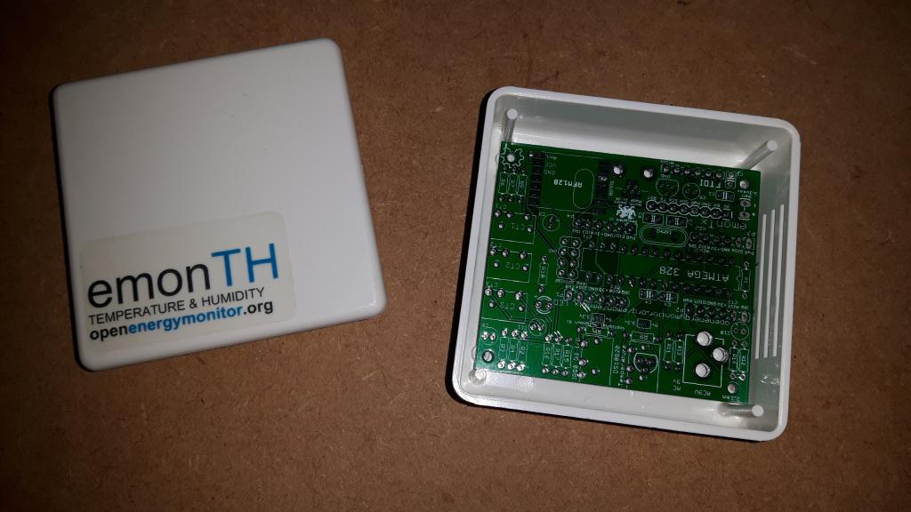
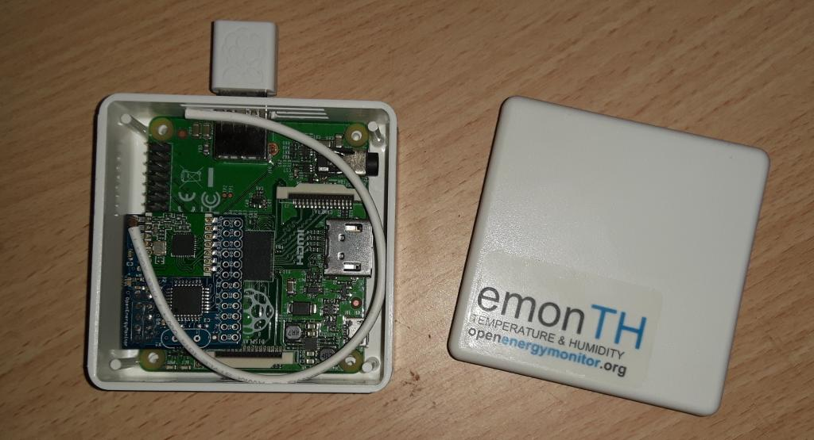

I already have two TX V3s, a TH, and an emonPi Base station that I love!
For my energy auditing business in the US, I frequently run into a situation where I need to monitor something like a water heater or well pump or something that is frequently away from the main panel. Additionally, I tend to pack a panel or sub-panel with CTs and it gets might tight, such that I sometimes have to leave the cover off while I collect data for a week or two. Would be nice to monitor the electricity at the point of consumption sometimes...
What would I need to do to create a unit that would fit into the same form factor size as the TH units that would have two CT plugs and transmit to the emonPi Base station? I'd like to build about four of these.
Any suggestions/solutions are greatly appreciated :)
Re: Battery powered, two CT monitor
It sounds as if you need a cut-down emonTx - all ( ! ) you need to do is merge the CAD drawings of the TH with those of the Tx.
OK, I jest somewhat, but in principle that's the direction you're headed. You don't need the temperature and humidity of the TH, you might well want the battery state, you lose the voltage monitor and one power supply, 2 current inputs and temperature of the Tx. And probably the USB sockets.
After all, the old emonTx V2 only just doesn't fit in the TH case, forgetting the batteries, and that used discrete wire-ended components and a DIL 328P. I think it's do-able.
Re: Battery powered, two CT monitor
The emonTx v2 was the ideal candidate. It does actually fit a emonTH case no problem, the screw holes do not line up that well but that's not a huge issue. I don't currently have a populated v2 board that's not in service so here is a pic of an empty board.

up it has 3 channels but they do not need to be all populated or used. The DIL ATmega328p chip can stand a bit proud when in a socket but can easily be installed without the socket to make room for batteries.
Unfortunately the old emonTx v2 is no longer available. I recently purchased the last couple from the shop, I wanted more but there are none to be had. When asked Trystan wouldn't commit to another run but didn't rule out the possibility either, so keep your fingers crossed and hopefully T&G see this when making the decision.
Paul
Re: Battery powered, two CT monitor
You would be surprised what you can fit in an emonTH case :-)

This is a Pi A+ with a rfm69pi and official raspberry pi wifi dongle, used as a complete emonBase.
Paul